| 图片 | 原文 | 翻译 |
|---|---|---|
| 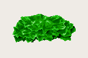 | レタス | 生菜 |
| 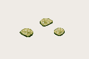 | ピクルス | 酸黄瓜 |
| 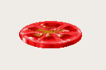 | トマト | 西红柿 |
 | たまねぎ | 洋葱 |
 | ？ | ？ |
| 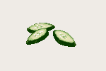 | きゅうり | 黄瓜 |
| 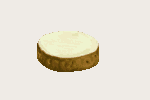 | じゃがいも | 土豆 |
| ？ | ？ |
| ？ | ？ |
| 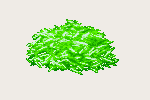 | キャベツ | 卷心菜 |
| ？ | ？ |
| ？ | ？ |
| 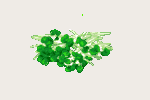 | かいわれな | 豆芽 |
| ？ | ？ |
| ？ | ？ |
| 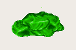 | サラダな | 莴苣 |
| ？ | ？ |
| 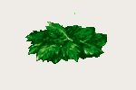 | セロリ | 芹菜 |
 | だいこん | 萝卜 |
| 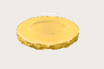 | たけのこ | 竹笋 |
| ？ | ？ |
| ？ | ？ |
| 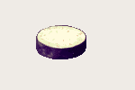 | なす | 茄子 |
| 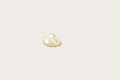 | にんにく | 大蒜 |
| 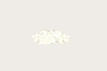 | ねぎ | 葱 |
| 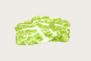 | はくさい | 白菜 |
| 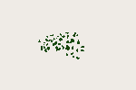 | パセリ | 香菜 |
| ？ | ？ |
| ？ | ？ |
| ？ | ？ |
| 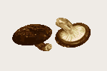 | しいたけ | 香菇 |
| 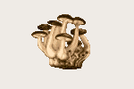 | しめじ | 口蘑 |
| ？ | ？ |
| 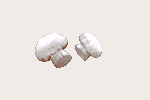 | マッシュルーム | 洋蘑菇 |
| ？ | ？ |
| ？ | ？ |
| ？ | ？ |
| ？ | ？ |